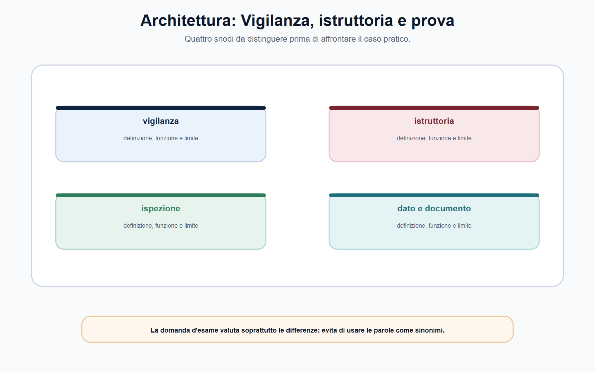
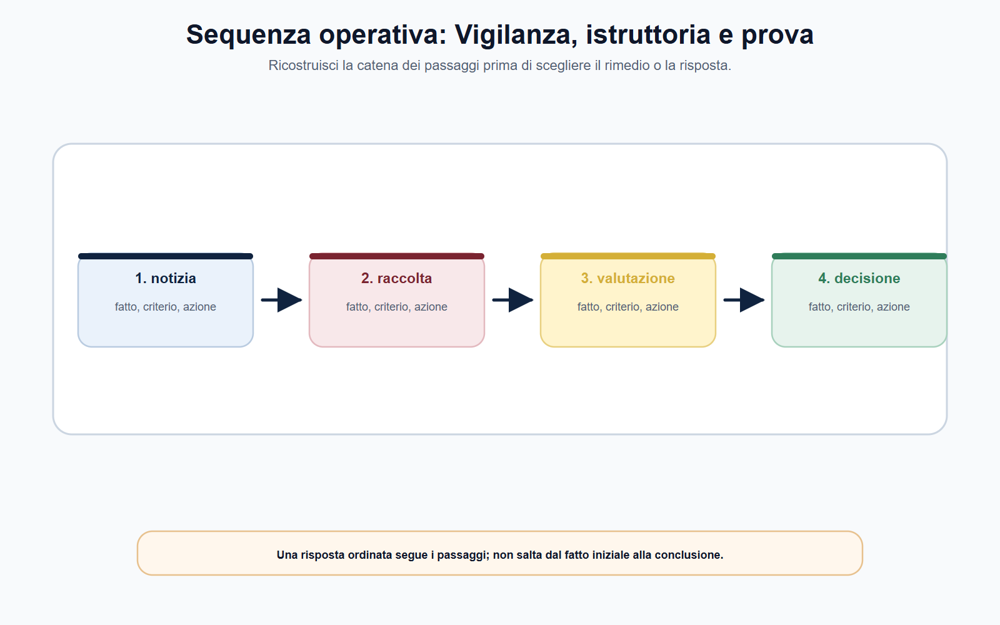
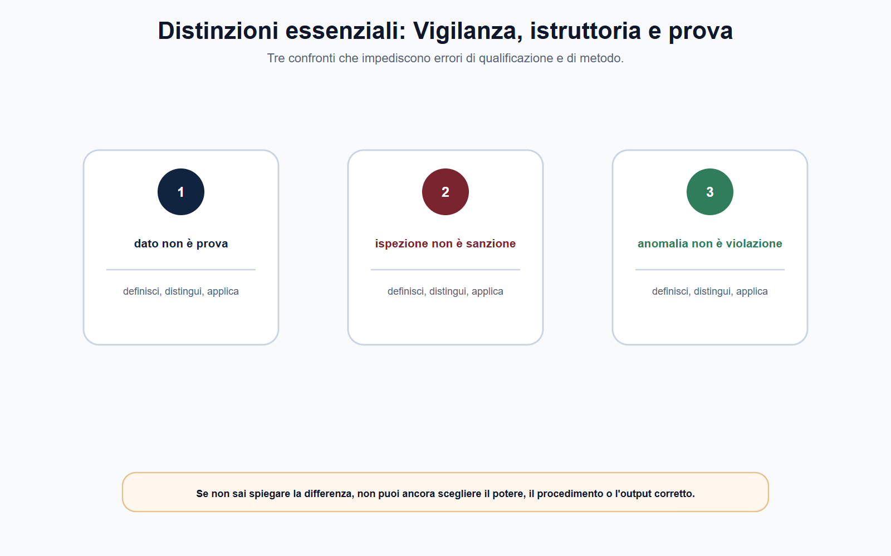
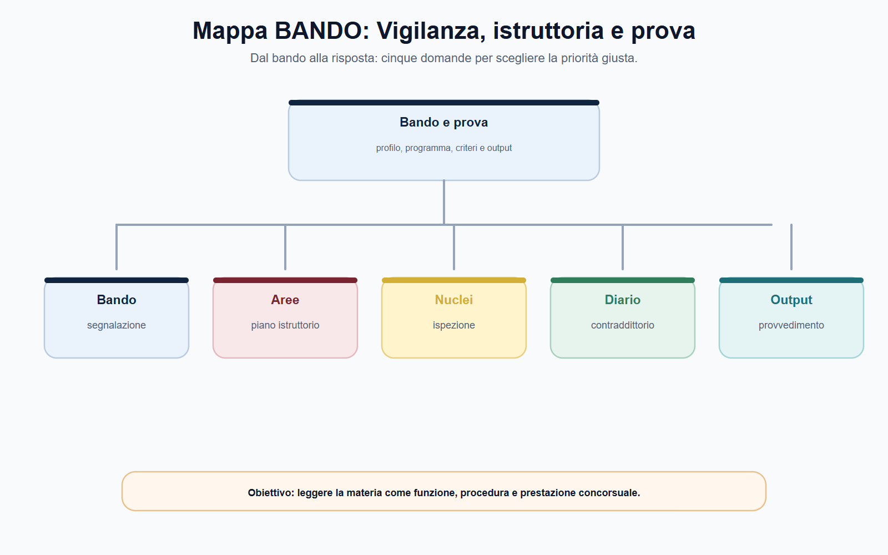

VOL-05 · Capitolo 05
M-FC05
Vigilanza, istruttoria,
ispezioni, dati e prova
Nelle Autorità indipendenti la qualità della decisione dipende dalla qualità dell’istruttoria. Un provvedimento può essere tecnicamente sofisticato e giuridicamente ben formulato, ma resta fragile se i fatti non sono stati ricostruiti con metodo, se i dati non sono pertinenti o se le osservazioni dei soggetti coinvolti non sono state considerate secondo le garanzie previste.
01 · Il problema in prova
Non partire dalla sanzione
Vigilanza, istruttoria, richiesta di informazioni, audizione, analisi economica, acquisizione documentale e ispezione sono strumenti diversi. Non possono essere usati come se fossero equivalenti. Due semplificazioni da evitare: ogni segnalazione prova una violazione; il funzionario può acquisire qualsiasi informazione ritenuta utile.
Che cosa ricostruisce il capitolo
Un fascicolo dalla segnalazione alla valutazione dell’evidenza, preservando competenza, riservatezza, contraddittorio e tracciabilità. Anche i poteri informativi e ispettivi più incisivi restano entro oggetto, proporzionalità e garanzie.
A che serve in prova
A distinguere vigilanza, istruttoria e ispezione; a definire il perimetro prima di acquisire dati; a valutare pertinenza, provenienza, integrità, riservatezza e utilizzabilità; a spiegare il ruolo del contraddittorio nella prova amministrativa.
Quale potere è attribuito, quale fatto deve essere accertato, quali elementi servono a provarlo?
La domanda «quale sanzione applicare?» arriva dopo. Una segnalazione può essere un impulso conoscitivo, non una conclusione. Un dato anomalo non è ancora una violazione.
02 · Tre strumenti
Vigilanza, istruttoria, ispezione
La vigilanza osserva il rispetto delle regole e individua aree di rischio. L’istruttoria ordina gli elementi utili a una decisione. L’ispezione è una forma di accertamento esercitabile soltanto nei casi, con le modalità e dalle persone indicate dalla fonte applicabile.
| Che cos’è | A che serve | Errore | |
|---|---|---|---|
| Vigilanza | Attività con cui l’Autorità osserva e controlla, nel proprio perimetro, regole, andamento del mercato o del servizio, emersione di rischi. | Comprendere se occorra approfondire un fatto. Segnalazioni, reclami, flussi, controlli, dati, cooperazione, notizie attendibili. | Anticipare il giudizio finale. |
| Istruttoria | Percorso ordinato di raccolta, verifica e valutazione degli elementi necessari per esercitare un potere. | Costruire il fascicolo: problema, norma, soggetto, competenza. Non è un deposito di documenti. | Trattare l’ipotesi come fatto provato. |
| Ispezione | Accertamento secondo presupposti e regole di settore. Può verificare luoghi, documenti, archivi, processi non adeguatamente acquisibili in via collaborativa. | Potere incisivo, non modello uniforme di tutte le Autorità. | Disporla ogni volta che c’è un sospetto. |
03 · Scheda iniziale
Notizia, ipotesi, evidenza, valutazione
Quando questi piani sono confusi, la motivazione presenta una supposizione come prova o un dato grezzo come conclusione. L’articolo 14 della legge n. 287/1990, nel settore antitrust, mostra un principio generale: poteri di acquisizione e garanzie di partecipazione concorrono a una decisione affidabile. L’esempio non va trapiantato negli altri settori.
| Campo | Domanda operativa | Errore da evitare |
|---|---|---|
| Oggetto | Quale fatto, condotta o situazione deve essere verificata? | Indagini esplorative senza perimetro. |
| Fonte di competenza | Quale norma o regolamento attribuisce il potere? | Usare un potere per una finalità estranea. |
| Soggetti | Chi è coinvolto e quale ambito è interessato? | Confondere segnalante, destinatario e terzo informato. |
| Ipotesi e fonti | Quali elementi confermerebbero o smentirebbero? Quali documenti, dati, dichiarazioni? | Acquisire tutto «per sicurezza». |
| Garanzie | Comunicazioni, termini, contraddittorio previsti? | Rinviare le garanzie alla fase finale. |
04 · Architettura
Piano istruttorio e richieste
Un piano istruttorio è una mappa di lavoro, non un atto conclusivo. Stabilisce quali informazioni acquisire, da chi, con quale finalità e in quale ordine. La sua qualità si misura dalla capacità di essere selettivo: chiede gli elementi necessari, evita duplicazioni e rende visibile il rapporto fra fatto da accertare e fonte probatoria.

Piano istruttorio e richieste di informazioni non coincidono: il primo orienta, le seconde acquisiscono. Distinguili prima del caso.
05 · Richieste
Chiedere ciò che serve
Una richiesta di informazioni ben impostata contiene oggetto del procedimento, fondamento del potere, elenco di dati o documenti, periodo di riferimento, formato, termine e indicazioni sulla riservatezza. Il destinatario deve poter comprendere che cosa viene richiesto e perché. La proporzionalità non impone di rinunciare a dati rilevanti: impone di collegare ogni richiesta a un oggetto istruttorio.
| Domanda prima della richiesta | Utilità |
|---|---|
| Il dato serve a verificare un fatto o soltanto a completare il fascicolo? | Distingue necessità da curiosità istruttoria. |
| Il periodo è coerente con la condotta esaminata? | Riduce eccedenze e costi di acquisizione. |
| Esiste una fonte meno invasiva o già disponibile? | Evita duplicazioni e ritardi. |
| Il formato consente controllo e riuso corretto? | Favorisce integrità e confrontabilità. |
| Occorrono cautele su segreto, dati personali, riservatezza? | Protegge la legittima circolazione delle informazioni. |
La legge n. 287/1990 qualifica come proporzionate le richieste informative e richiede che siano utili ai fini dell’istruttoria. È un orientamento metodologico anche quando la fonte di un altro ente prevede regole differenti. Modificare il piano non è un difetto se la modifica è motivata e tracciata; lo è quando l’oggetto cambia in modo implicito.
06 · Sequenza
Dai fatti alla decisione
Una risposta ordinata segue i passaggi. Non salta dal segnale iniziale alla sanzione. Prima il perimetro, poi le acquisizioni, poi la valutazione, poi la proposta.

Ricostruisci la catena prima di scegliere il rimedio. Il sospetto può orientare l’istruttoria, non sostituisce la verifica della disciplina.
07 · Ispezioni
Potere incisivo, perimetro rigoroso
L’articolo 14 della legge n. 287/1990 attribuisce all’AGCM, nel proprio settore, poteri ispettivi dettagliati: accesso presso imprese e associazioni, controllo di libri e documenti su qualunque supporto, acquisizione di copie, regole specifiche per luoghi diversi dai locali d’impresa. Il messaggio non è un elenco da estendere a ogni Autorità: più incisivo è il potere, più strettamente vanno verificati fonte, oggetto, presupposti e garanzie.
Fonte e ufficio
Quale disposizione e quale soggetto è competente.
Oggetto
Quali elementi si cercano, in quali luoghi e documenti.
Atti e limiti
Avvio, ordini, deleghe, autorizzazioni; dati personali, segreti, riservatezza.
Verbale e fascicolo
Attività, acquisizioni, dichiarazioni, osservazioni; custodia e indice.
La disciplina organizzativa individua, per l’attività ispettiva, un ordine di servizio che delimita destinatario, poteri, ambito, luogo e responsabili. Le deliberazioni di programmazione mostrano priorità e criteri, anche con la collaborazione della Guardia di finanza nei limiti applicabili. Non è un protocollo trasferibile a CONSOB, IVASS, ARERA o AGCOM: conferma la necessità di perimetrare e documentare l’accesso.
08 · Distinzioni
Tre confronti che impediscono errori
Un documento acquisito non è automaticamente decisivo. Una dichiarazione non è automaticamente inattendibile. Un modello economico non è automaticamente neutrale. Ogni elemento va collocato nel contesto e valutato insieme agli altri.

Dato non è prova; ispezione non è sanzione; anomalia non è violazione. Se non sai spiegare la differenza, non puoi ancora scegliere il potere.
09 · Dati e documenti
Dalla raccolta alla qualità dell’evidenza
Il dato può essere economico, tecnico, contabile, contrattuale, digitale, personale o proveniente da un sistema informativo. Un documento può essere una comunicazione, un registro, un verbale, una relazione, una dichiarazione, una serie storica o l’esito di un’analisi. La varietà aumenta l’esigenza di metodo.
| Criterio | Domanda di controllo |
|---|---|
| Pertinenza | Il dato è collegato al fatto e al potere oggetto dell’istruttoria? |
| Provenienza | Si può ricostruire da chi, quando e con quale modalità è stato acquisito? |
| Integrità | Documento o dataset è completo, leggibile e non alterato nel percorso? |
| Affidabilità | Quali limiti, errori, definizioni o distorsioni possono incidere? |
| Riservatezza e utilizzabilità | Esistono limiti di segreto, tutela di dati personali, finalità o circolazione? |
Una tabella, un log o un elenco di contratti possono essere elementi istruttori. L’affermazione che dimostrino una violazione è una conclusione: richiede metodo, confronto con la regola, eventuale analisi tecnica e motivazione. L’ufficio deve poter spiegare il passaggio, indicando assunzioni, limiti e alternative interpretative.
10 · Contraddittorio
Prova e fascicolo leggibile
Nel linguaggio del capitolo, «prova» indica l’insieme degli elementi che sostengono l’accertamento di un fatto o una conclusione tecnica. Il contraddittorio migliora questa valutazione: far emergere errori materiali, verificare spiegazioni alternative, rafforzare la motivazione. Non significa indebolire l’istruttoria.
Che cosa contiene un indice essenziale
Avvio, oggetto e fonte; segnalazioni con il loro valore informativo; richieste, risposte e documenti; verbali e atti ispettivi; dati grezzi, metadati, elaborazioni e note tecniche; contributi dei soggetti interessati; nota di valutazione e proposta; atto conclusivo, pubblicità, attività successive.
Due rischi opposti
Il fascicolo opaco, in cui non si capisce come si sia arrivati alla conclusione. Il fascicolo sovraccarico, in cui l’accumulo di materiali sostituisce il ragionamento. La catena da rendere visibile è fatto, fonte, analisi, valutazione, decisione.
Entra nel fascicolo come criterio di corretta gestione, non come ostacolo generico. Liceità, minimizzazione, esattezza, integrità, riservatezza e responsabilizzazione orientano il trattamento anche quando l’Autorità esercita compiti di interesse pubblico. Il dato necessario non diventa pubblicabile senza limiti né utilizzabile per finalità ulteriori incompatibili.
11 · BANDO
Collegare sempre potere e garanzia
Nei bandi, le parole vigilanza, istruttoria, poteri informativi, ispezioni, dati, analisi economica e procedimenti richiedono di non separare lo strumento dalla garanzia.
| Voce | Output da allenare |
|---|---|
| Vigilanza | Scheda da segnalazione a piano istruttorio. |
| Istruttoria | Indice ragionato del fascicolo. |
| Ispezioni | Check-list «prima dell’accesso». |
| Dati e prova | Griglia di valutazione di un dataset. |
| Contraddittorio | Risposta orale in dieci righe. |
La vigilanza individua rischi; l’istruttoria verifica fatti. L’ispezione è un potere settoriale, non un modello valido per ogni Autorità.

12 · Caso guidato
Il dato anomalo non è una violazione
Nel monitoraggio di un servizio regolato, un operatore presenta per tre trimestri tempi di risposta molto superiori alla media. Un’associazione di utenti segnala mancati riscontri. Il dirigente chiede di predisporre subito una proposta sanzionatoria.
| Passaggio | Ragionamento |
|---|---|
| Perimetro | Quale regola fissa, se la fissa, uno standard o un obbligo? I dati confrontano popolazioni omogenee? Periodi eccezionali, criteri di rilevazione, errori di trasmissione? Le segnalazioni riguardano lo stesso fenomeno? |
| Prima richiesta | Dati disaggregati, metodologia di calcolo, procedure interne, spiegazioni sugli scostamenti. Ulteriori strumenti solo dopo fonte, presupposti e garanzie. |
| Fascicolo | Contributi dell’operatore, osservazioni dell’associazione ed elementi tecnici restano distinti. |
| Nota | Ciò che è accertato, ciò che resta incerto, le fonti, perché la condotta rientra o non rientra nella fattispecie. Se si propone una misura, la proposta segue l’accertamento: non lo precede. |
13 · Verifica
Due domande da saper spiegare
Rapporto tra poteri istruttori, dati e contraddittorio?
Prima si individuano fatto e fonte del potere. L’istruttoria raccoglie e valuta dati, documenti, dichiarazioni e analisi in modo pertinente e proporzionato. L’ispezione è eventuale, solo nei presupposti e con le garanzie di settore. I dati devono essere tracciabili, integri, affidabili e gestiti nel rispetto della riservatezza. Il contraddittorio, nelle forme previste, migliora accertamento e motivazione. La decisione rende comprensibile il percorso dai fatti alle conclusioni.
Può acquisire qualsiasi dato e trattarlo come prova?
No. Ogni acquisizione deve essere collegata alla fonte del potere, all’oggetto e ai criteri di pertinenza e proporzionalità. Il dato va valutato per provenienza, integrità, affidabilità, riservatezza e relazione con il fatto. La disponibilità tecnica di un’informazione non sostituisce la sua legittima utilizzazione.
14 · Mini-esercizio
Dati aggregati incompatibili
Un operatore invia dati aggregati che sembrano incompatibili con gli obblighi informativi del settore. Compila la griglia prima di proporre qualsiasi conclusione. Se hai scritto «acquisire tutta la documentazione», il perimetro non è ancora definito.
| Campo | Appunto |
|---|---|
| Fatto o obbligo | Che cosa va verificato, con quale fonte del potere istruttorio. |
| Dato necessario | Periodo, destinatario, formato; controllo di provenienza e integrità. |
| Alternative | Possibili spiegazioni diverse dalla violazione. |
| Cautele | Riservatezza, protezione dati, forma di contraddittorio da verificare. |
| Nota conclusiva | Elementi per chiudere senza anticipare la sanzione. |
«L’ispezione serve a trovare prove, quindi può essere disposta ogni volta che l’ufficio ha un sospetto.» L’ispezione è un potere incisivo soggetto a fonte, presupposti, oggetto, competenza e garanzie. Il sospetto orienta, non sostituisce la verifica.
15 · Trasferimento
Stesso contenuto, tre forme
Immagina che la stessa questione sul segnale di vigilanza compaia in un quiz, all’orale e in un caso. Il contenuto di base non cambia. Una risposta lunga non è automaticamente più completa; una risposta breve non può omettere il presupposto.
Quiz
Cerca la distinzione decisiva fra piano istruttorio e richieste di informazioni. L’opzione errata trasferisce a un istituto la funzione dell’altro.
Orale
Enuncia criterio, limite ed esempio. L’ispezione è lo snodo: quale documento manca, chi può richiederlo, quale conseguenza sarebbe prematura.
Caso
Individua fatti, fonte, competenza e passo istruttorio. Chiudi sul contraddittorio con una frase condizionata ai fatti realmente accertati.
Se una stessa formula produce identica risposta in tre situazioni diverse, il testo è troppo generico e va ricondotto al perimetro concreto.
16 · Da tenere ferme
Cinque regole, con il perché
1. La vigilanza individua rischi e criticità; l’istruttoria verifica fatti e costruisce il materiale per decidere. Non si parte dalla sanzione.
2. Le richieste di informazioni devono essere pertinenti e proporzionate. Acquisire tutto «per sicurezza» non è un piano istruttorio.
3. L’ispezione è un potere settoriale, non un modello valido per ogni Autorità. Più è incisiva, più stretti sono fonte, presupposti e garanzie.
4. Dati e documenti richiedono provenienza, integrità, riservatezza e interpretazione motivata. Un dato anomalo non è una violazione accertata.
5. Il contraddittorio non rallenta automaticamente il procedimento: migliora la qualità dell’accertamento e della decisione. Il fascicolo rende visibile la catena fatto, fonte, analisi, valutazione, decisione.
Prossimo capitolo
Sanzioni, impegni, rimedi e controllo giurisdizionale
Il fascicolo è costruito. Il capitolo successivo apre l’esito: quando una misura sanzionatoria, un impegno o un rimedio è proporzionato, e come si controlla la decisione.